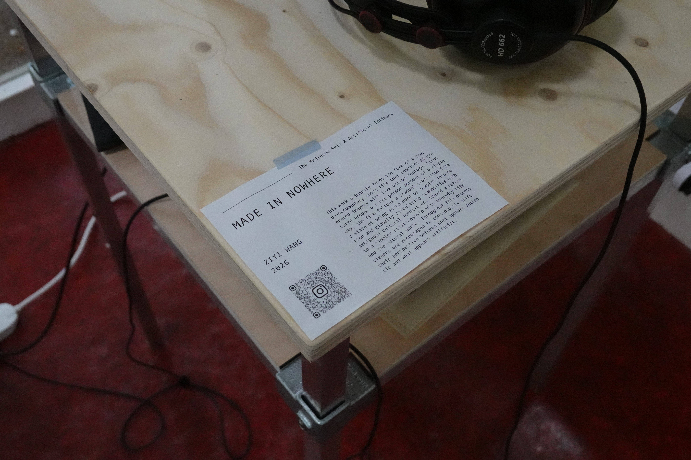
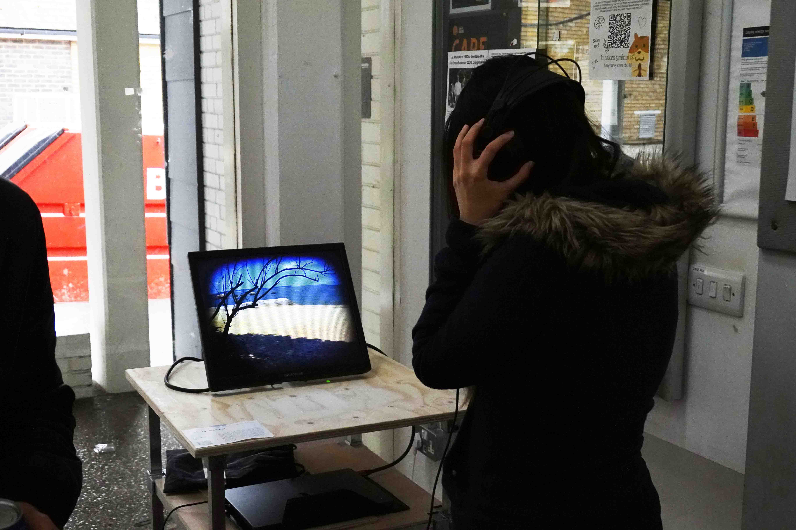
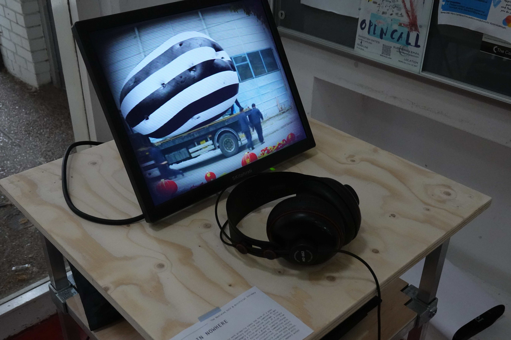
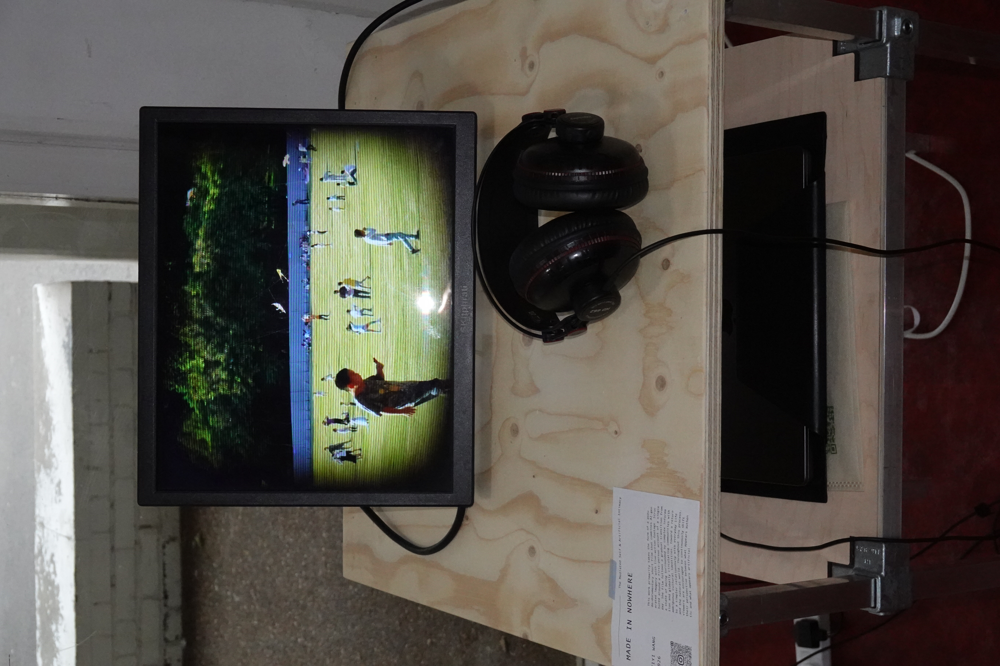

Made in Nowhere
This work primarily takes the form of a pseu do-documentary short film that combines AI-gen erated imagery with live-action footage. Struc tured around a first-person account of a single day, the film follows a gradual transition from a state of being surrounded by complex informa tion and globally circulating commodities with ambiguous cultural identities, toward a return to a simpler relationshvip with everyday life and the natural world. Throughout this process, viewers are encouraged to continuously shift their perspective between what appears authen tic and what appears artificial.
Ziyi Wang
I am an artist and fashion designer with a strong interest in stage design, film, music production, and the commercialization of art. My past projects span a wide range of media, including painting, costume design, stage design, short films, interactive installations, sculpture, and virtual spaces. I have also worked in gallery operations and as an art director for short films. Throughout these experiences, I have been exploring and gradually clarifying my creative direction across different mediums. Rooted in my personal experiences, my work reflects a deep contemplation of everyday objects and a critical reflection on contemporary systems through the lens of my shifting identities. I investigate the fashion industry, the history of food, and the production lines of commodities, seeking to uncover the mechanisms behind how the world operates by opening windows into these systems.